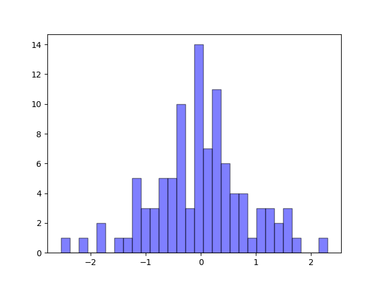
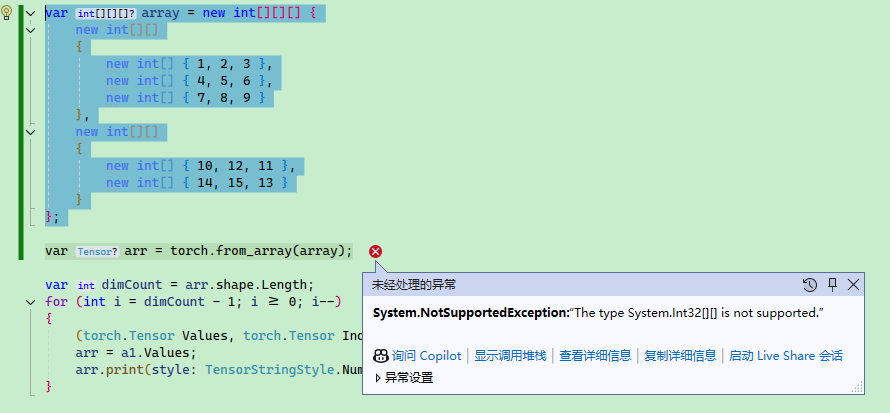

1.2 Pytorch 基础
本文内容介绍 Pytorcn 的基础 API，主要是数组的创建方式和运算方式，由于相关内容跟 Numpy 比较相似，并且 Numpy 类型可以转 torch.Tensor，因此对 Numpy 感兴趣的读者可以参考笔者的其它文章：
- Python 之 Numpy 框架入门
提示：学习本文时，如果对线性代数有足够的了解，则学习效果更佳，没有线性代数基础也没关系，后面会学习到。
基础使用
由于神经网络中的数值很多以向量或数组等形式存在，不像日常编程中的数值类型那么简单，因此打印数值信息是我们学习了解或调试程序的一种手段，下面我们来观察程序是怎么打印 Pytorch 中复杂数据类型的。
打印
下面使用 Pytorch 创建一个从 0..9 的数组，接着打印数组。
Python：
import torch
x = torch.arange(10)
print(x)
tensor([0, 1, 2, 3, 4, 5, 6, 7, 8, 9])
C#：
using TorchSharp;
var x = torch.arange(10);
x.print(style:TensorStringStyle.Default);
x.print(style:TensorStringStyle.Numpy);
x.print(style:TensorStringStyle.Metadata);
x.print(style:TensorStringStyle.Julia);
x.print(style:TensorStringStyle.CSharp);
[10], type = Int64, device = cpu 0 1 2 3 4 5 6 7 8 9
[0, 1, 2, ... 7, 8, 9]
[10], type = Int64, device = cpu
[10], type = Int64, device = cpu 0 1 2 3 4 5 6 7 8 9
[10], type = Int64, device = cpu, value = long [] {0L, 1L, 2L, ... 7L, 8L, 9L}
Python 打印的结果比较容易理解，C# 默认打印的方式比较难看，所以一般来说，可视化都使用 TensorStringStyle.Numpy 枚举。
C# 打印数值时，参数有个 string? fltFormat = "g5"，表示精确度的意思，即打印的小数位数。
对于后面的章节来说，默认都引入 Python 的 torch 包名称、C# 的 TorchSharp 命名空间，后续代码示例可能会省略引入代码，读者自行引入。
基本数据类型
Pytorch 的数据类型跟我们编程语言中的基本类型不太一样，读者要注意区别。
具体详细的官方文档参考链接：
https://pytorch.org/docs/stable/tensor_attributes.html
https://pytorch.ac.cn/docs/stable/tensor_attributes.html
Pytorch 创建的数据类型以 torch.Tensor 表示，torch.Tensor 是用来处理机器学习模型中的各种数据的基础结构，包括标量、向量、矩阵以及更高维度的张量。如果笔者没理解错的话，在 Pytorch 中创建的 Tensor 对象就叫张量。开发者可以通过各种形式的数据在 Pytorch 创建 Tensor。
Pytorch 创建的数据类型，都使用 Tensor 对象表示。
对于这句话的理解，建议看完本文再回头看看。
PyTorch 有十二种不同的数据类型，列表如下：
| 数据类型 | dtype |
|---|---|
| 32 位浮点数 | torch.float32 或 torch.float |
| 64 位浮点数 | torch.float64 或 torch.double |
| 64 位复数 | torch.complex64 或 torch.cfloat |
| 128 位复数 | torch.complex128 或 torch.cdouble |
| 16 位浮点数 | torch.float16 或 torch.half |
| 16 位浮点数 | torch.bfloat16 |
| 8 位整数（无符号） | torch.uint8 |
| 8 位整数（有符号） | torch.int8 |
| 16 位整数（有符号） | torch.int16 或 torch.short |
| 32 位整数（有符号） | torch.int32 或 torch.int |
| 64 位整数（有符号） | torch.int64 或 torch.long |
| 布尔值 | torch.bool |
下面在创建数组时，设置数组的类型。
Python：
float_tensor = torch.ones(1, dtype=torch.float)
double_tensor = torch.ones(1, dtype=torch.double)
complex_float_tensor = torch.ones(1, dtype=torch.complex64)
complex_double_tensor = torch.ones(1, dtype=torch.complex128)
int_tensor = torch.ones(1, dtype=torch.int)
long_tensor = torch.ones(1, dtype=torch.long)
uint_tensor = torch.ones(1, dtype=torch.uint8)
C#：
var float_tensor = torch.ones(1, dtype: torch.float32);
var double_tensor = torch.ones(1, dtype: torch.float64);
var complex_float_tensor = torch.ones(1, dtype: torch.complex64);
var complex_double_tensor = torch.ones(1, dtype: torch.complex128);
var int_tensor = torch.ones(1, dtype: torch.int32); ;
var long_tensor = torch.ones(1, dtype: torch.int64);
var uint_tensor = torch.ones(1, dtype: torch.uint8);
在 C# 中， torch.ScalarType 枚举表示 Pytorch 的数据类型，所以可以有以下两种方式指定数据类型。
例如：
var arr = torch.zeros(3,3,3, torch.ScalarType.Float32);
arr.print(style: TensorStringStyle.Numpy);
或：
var arr = torch.zeros(3,3,3, torch.float32);
arr.print(style: TensorStringStyle.Numpy);
CPU 或 GPU 运算
我们知道，AI 模型可以在 CPU 下运行，也可以在 GPU 下运行，Pytorch 的数据也可以这样做，在创建数据类型时就设置绑定的设备，在运算使用会使用对应的设备进行运算。
一般使用
cpu表示 CPU，使用cuda或cuda:{显卡序号}表示 GPU。
下面编写代码判断 Pytorch 正在使用 GPU 还是 CPU 运行。
Python：
print(torch.get_default_device())
C#：
Console.WriteLine(torch.get_default_device())
如果当前设备支持 GPU，则使用 GPU 启动 Pytorch，否则使用 CPU 启动 Pytorch。可以通过 torch.device('cuda')、torch.device('cuda:0') 指定使用 GPU 、指定使用哪个 GPU。
Python：
if torch.cuda.is_available():
print("当前设备支持 GPU")
device = torch.device('cuda')
# 使用 GPU 启动
torch.set_default_device(device)
current_device = torch.cuda.current_device()
print(f"绑定的 GPU 为：{current_device}")
else:
# 不支持 GPU，使用 CPU 启动
device = torch.device('cpu')
torch.set_default_device(device)
default_device = torch.get_default_device()
print(f"当前正在使用 {default_device}")
C#：
if (torch.cuda.is_available())
{
Console.WriteLine("当前设备支持 GPU");
var device = torch.device("cuda",index:0);
// 使用 GPU 启动
torch.set_default_device(device);
}
else
{
var device = torch.device("cpu");
// 使用 CPU 启动
torch.set_default_device(device);
Console.WriteLine("当前正在使用 CPU");
}
var default_device = torch.get_default_device();
Console.WriteLine($"当前正在使用 {default_device}");
C# 没有
torch.cuda.current_device()这个方法，建议默认设置使用哪块 GPU，即设置 index 参数。
另外可以通过使用 torch.cuda.device_count() 获取设备有多少个显卡，这里不再赘述。
Pytorch 还支持针对单独的数据类型设置使用 CPU 还是 GPU，还可以让两者混合运算，这里不再赘述。
Tensor
x = torch.tensor(3.0);
基本数组
Pytorch 使用 asarray() 函数将 obj 值转换为数组，其定义如下：
torch.asarray(obj, *, dtype=None, device=None, copy=None, requires_grad=False) → Tensor
obj 可以是以下之一：
- a tensor（张量）
- a NumPy array or a NumPy scalar（NumPy 数组或 NumPy 标量）
- a DLPack capsule
- an object that implements Python’s buffer protocol
- a scalar（标量）
- a sequence of scalars（标量序列）
我不会的或者文章用不到的，就不翻译了。
比如说，传入一个平常的数组类型，转换成 Pytorch 中的数组类型。
Python：
arr = torch.asarray([1,2,3,4,5,6], dtype=torch.float)
print(arr)
C#：
var arr = torch.from_array(new float[] { 1, 2, 3, 4, 5 });
arr.print(style: TensorStringStyle.Numpy);
请注意，两种语言的版本差异有些大。
前面提到过，可以给单独的数据类型设置使用 CPU 还是 GPU。
device = torch.device("cuda",index=0)
arr = torch.asarray(obj=[1,2,3,4,5,6], dtype=torch.float, device=device)
print(arr)
将数据类型转换为使用 CPU 设备：
device = torch.device("cuda",index=0)
arr = torch.asarray(obj=[1,2,3,4,5,6], dtype=torch.float, device=device)
arr = arr.cpu()
print(arr)
生成数组
torch.zeros
用于创建一个元素全为 0 的数组，可以指定数组大小，其定义如下：
torch.zeros(*size, *, out=None, dtype=None, layout=torch.strided, device=None, requires_grad=False) → Tensor
Python：
arr = torch.zeros(10, dtype=torch.float)
print(arr)
C#：
var arr = torch.zeros(10);
arr.print(style: TensorStringStyle.Numpy);
另外，可以指定生成的数组维度，例如下面指定生成 2*3 的多维数组。
var arr = torch.zeros(2,3, torch.float32);
arr.print(style: TensorStringStyle.Numpy);
代码为 C# 语言。
打印：
[[0, 0, 0] [0, 0, 0]]
我们还可以生成多种维度的数组，例如下面生成一个 3*3*3 的数组：
var arr = torch.zeros(3,3,3, torch.float32);
arr.print(style: TensorStringStyle.Numpy);
为了方便理解，下面将打印结果做了格式化处理。
[
[[0, 0, 0] [0, 0, 0] [0, 0, 0]]
[[0, 0, 0] [0, 0, 0] [0, 0, 0]]
[[0, 0, 0] [0, 0, 0] [0, 0, 0]]
]
torch.ones
创建一个全由 1 填充的数组，使用方法跟 torch.zeros 完全一致，因此这里不再赘述。
torch.empty
创建一个未初始化的数组，使用方法跟 torch.zeros 完全一致，因此这里不再赘述。
由于其没有初始化内存，因此内存区域会残留数据，元素的值不确定。
复制函数
此外，上面三个函数还有对应的原型复制函数：
torch.ones_like(input, *, dtype=None, layout=None, device=None, requires_grad=False, memory_format=torch.preserve_format) → Tensor
torch.zeros_like(input, *, dtype=None, layout=None, device=None, requires_grad=False, memory_format=torch.preserve_format) → Tensor
torch.empty_like(input, *, dtype=None, layout=None, device=None, requires_grad=False, memory_format=torch.preserve_format) → Tensor
它们的作用是根据数组类型，拷贝一个相同的结构，然后填充对应值。
如下示例，复制数组相同的结构，但是填充的值为 1。
var arr = torch.ones_like(torch.zeros(3, 3, 3));
arr.print(style: TensorStringStyle.Numpy);
该代码语言为 C#。
[
[[1, 1, 1] [1, 1, 1] [1, 1, 1]]
[[1, 1, 1] [1, 1, 1] [1, 1, 1]]
[[1, 1, 1] [1, 1, 1] [1, 1, 1]]
]
torch.rand
torch.rand 会生成一个张量，数组会填充来自 [0,1) 区间上的均匀分布的随机数。
函数定义如下：
torch.rand(*size, *, generator=None, out=None, dtype=None, layout=torch.strided, device=None, requires_grad=False, pin_memory=False) → Tensor
例如生成 2*3 大小的，范围在 [0,1) 区间的随机数，使用 C# 编写代码：
var arr = torch.rand(2,3);
arr.print(style: TensorStringStyle.Numpy);
[[0.60446, 0.058962, 0.65601] [0.58197, 0.76914, 0.16542]]
由于 C# 绘制图形的库不像 Python matplotlib 简单易用，因此下面使用 Python 编写代码绘制均匀分布的随机数。
import torch
import matplotlib.pyplot as plt
arr = torch.rand(100, dtype=torch.float)
print(arr)
x = arr.numpy()
y = x
plt.scatter(x,y)
plt.show()
using Maomi.Torch;
using Maomi.Plot;
using TorchSharp;
var x = torch.rand(100);
x.print(style: TensorStringStyle.Numpy);
ScottPlot.Plot myPlot = new();
myPlot.Add.Scatter(x, x);
var form = myPlot.Show(400, 300);
由图可知，生成的随机数是均匀散布在 [0,1) 区间内。

torch.randn
生成具有给定形状的标准正态分布（平均值为0，方差为1）的随机样本。随机样本取值范围是[0,1)。
定义如下：
torch.randn(*size, *, generator=None, out=None, dtype=None, layout=torch.strided, device=None, requires_grad=False, pin_memory=False) → Tensor
官方文档：https://pytorch.ac.cn/docs/stable/generated/torch.randn.html#torch.rand
由于 C# 不好绘图，这里使用 Python 编写示例：
import torch
import matplotlib.pyplot as plt
arr = torch.randn(100, dtype=torch.float)
print(arr)
x = arr.numpy()
y = x
plt.hist(x, bins=30, alpha=0.5, color='b', edgecolor='black')
plt.show()

x 坐标轴是数值，y 坐标轴是出现次数。
torch.randint
在某个区间内生成随机数。
定义如下：
torch.randint(low=0, high, size, \*, generator=None, out=None, dtype=None, layout=torch.strided, device=None, requires_grad=False) → Tensor
比如在 0-100 范围内生成 10 个元素，安装 5*2 结构组成，使用 C# 代码编写。
var arr = torch.randint(low: 0, high: 100, size: new int[] { 5, 2 });
arr.print(style: TensorStringStyle.Numpy);
[[17, 46] [89, 52] [10, 89] [80, 91] [52, 91]]
如果要生成某个区间的浮点数，则可以使用 torch.rand ，但是因为 torch.rand 生成范围是 [0,1)，因此需要自行乘以倍数。例如要生成 [0,100) 的随机数。
var arr = torch.rand(size: 100, dtype: torch.ScalarType.Float32) * 100;
arr.print(style: TensorStringStyle.Numpy);
torch.arange
指定区间以及步长，均匀提取元素生成数组。
定义如下：
torch.arange(start=0, end, step=1, *, out=None, dtype=None, layout=torch.strided, device=None, requires_grad=False) → Tensor
比如说，需要生成 [0,1,2,3,4,5,6,7,8,9] 这样的数组，可以使用：
var arr = torch.arange(start: 0, stop: 10, step: 1);
arr.print(style: TensorStringStyle.Numpy);
如果将步长改成 0.5。
var arr = torch.arange(start: 0, stop: 10, step: 0.5);
[0.0000, 0.5000, 1.0000, 1.5000, 2.0000, 2.5000, 3.0000, 3.5000, 4.0000,
4.5000, 5.0000, 5.5000, 6.0000, 6.5000, 7.0000, 7.5000, 8.0000, 8.5000,
9.0000, 9.5000]
数组操作和计算
轴
在 Pytorch 中，往往使用 dim(dimension) 参数表示轴，轴就是张量的层数。
有以下数组：
[[ 1, 2, 3 ], { 4, 5, 6 ]]
如果把 a = [1,2,3]，b = [4,5,6]，则：
[a,b]
那么当我们要获取 a 时，dim(a) = 0，dim(b) = 1。
var arr = torch.from_array(new[,] { { 1, 2, 3 }, { 4, 5, 6 } });
arr.print(style: TensorStringStyle.Numpy);
// 打印维度
arr.shape.print();
var a = arr[0];
a.print();
var b = arr[1];
b.print();
[[1, 2, 3] [4, 5, 6]]
[2, 3]
[3], type = Int32, device = cpu 1 2 3
[3], type = Int32, device = cpu 4 5 6
这里我们分两步理解，由于该数组是 2*3 数组，可以使用 .shape.print() 打印出来。
由于第一层有两个元素，因此可以使用 Tensor[i] 获取第一层的第 i 个元素，其中 i<2。
同理，由于 a、b 的下一层都有 3 个元素，因此第二层 n<3。
例如要将数组的 3、6 两个元素取出来。
用 C# 可以这样写，但是打印的时候不能选 TensorStringStyle.Numpy ，否则打印不出来。
var arr = torch.from_array(new[,] { { 1, 2, 3 }, { 4, 5, 6 } });
var a = arr[0, 2];
a.print(style: TensorStringStyle.CSharp);
var b = arr[1, 2];
b.print(style: TensorStringStyle.CSharp);
同理，如果数组有三层，可以这样获取 3、6 两个元素
var arr = torch.from_array(new[, ,] { { { 1, 2, 3 } }, { { 4, 5, 6 } } });
var a = arr[0, 0, 2];
a.print(style: TensorStringStyle.CSharp);
var b = arr[1, 0, 2];
b.print(style: TensorStringStyle.CSharp);
如果要取出一部分元素，TorchCsharp 可以使用 a[i..j] 的语法截取，示例如下。
var arr = torch.from_array(new int[] { 1, 2, 3 });
arr = arr[0..2];
arr.print(style: TensorStringStyle.Numpy);
[1, 2]
数组排序
Pytorch 中有一些排序函数：
sort ：沿给定维度按值升序对 input 张量的元素进行排序。
argsort：它是沿指定轴的间接排序，本文不讲解。
msort：按值对 input 张量沿其第一维以升序排序。torch.msort(t) 等效于 torch.sort(t, dim=0)。
sort 可以降序或升序，参数说明如下：
torch.sort(input, dim=-1, descending=False, stable=False, *, out=None)
- input (张量) – 输入张量。
- dim (int,可选) – 要排序的维度
- descending (bool,可选) – 控制排序顺序（升序或降序）
- stable (boo,可选) – 使排序例程稳定，从而保证等效元素的顺序得以保留。
示例：
var arr = torch.arange(start: 0, stop: 10, step: 1);
// 或者使用 torch.sort(arr, descending: true)
(torch.Tensor Values, torch.Tensor Indices) a1 = arr.sort(descending: true);
a1.Values.print(style: TensorStringStyle.Numpy);
[9, 8, 7, ... 2, 1, 0]
Values 是排序后的结果，Indices 是排序的规则。
如果数组结构比较复杂，默认不设置参数时，只有最内层数组进行排序。如下代码所示，有两层数组。
var arr = torch.from_array(new[,] { { 4, 6, 5 }, { 8, 9, 7 }, { 3, 2, 1 } });
(torch.Tensor Values, torch.Tensor Indices) a1 = arr.sort();
a1.Values.print(style: TensorStringStyle.Numpy);
a1.Indices.print(style: TensorStringStyle.Numpy);
[[4, 5, 6] [7, 8, 9] [1, 2, 3]]
[[0, 2, 1] [2, 0, 1] [2, 1, 0]]
Indices 会记录当前元素在以前的排序位置。
当设置 arr.sort(dim: 0); 时，按照第一层排序。
[[3, 2, 1] [4, 6, 5] [8, 9, 7]]
[[2, 2, 2] [0, 0, 0] [1, 1, 1]]
当设置 arr.sort(dim: 1); 时，只有里面一层排序。
[[4, 5, 6] [7, 8, 9] [1, 2, 3]]
[[0, 2, 1] [2, 0, 1] [2, 1, 0]]
当一个张量的维度比较大时，我们可以这样逐层排序。
var arr = torch.from_array(new[, ,] { { { 4, 6, 5 }, { 8, 9, 7 }, { 3, 2, 1 } } });
var dimCount = arr.shape.Length;
for (int i = dimCount - 1; i >= 0; i--)
{
(torch.Tensor Values, torch.Tensor Indices) a1 = arr.sort(dim: i);
arr = a1.Values;
arr.print(style: TensorStringStyle.Numpy);
}
[[[1, 2, 3] [4, 5, 6] [7, 8, 9]]]
C# 多维数组没有 Python 那么方便，会要求每一层的元素个数必须一致。
例如下面的数组声明是对的：
var array = new int[, , ]
{
{
{ 10, 12, 11},{ 14, 15, 11 }
},
{
{ 4, 6, 5 }, { 8, 9, 7 }
}
};
如果层数元素个数不一致会报错：

另外要注意，C# 有多维数组和交错数组，下面是交错数组的声明方式，TorchSharp 并不支持。
var array = new int[][][]
{
new int[][]
{
new int[] { 1, 2, 3 },
new int[] { 4, 5, 6 },
new int[] { 7, 8, 9 }
},
new int[][]
{
new int[] { 10, 12, 11 },
new int[] { 14, 15, 13 }
}
};

数组运算符
在 PyTorch 中，张量支持许多运算符，下面列举部分加以说明：
算术运算符
+：加法，如a + b-：减法，如a - b*：元素级乘法，如a * b/：元素级除法，如a / b//：元素级整除，如a // b，TorchCsharp 不支持。%：取模运算，如a % b**：幂运算，如a ** b，TorchCsharp 不支持，使用.pow(x)代替。
逻辑运算符
==：元素级相等比较，如a == b!=：元素级不等于比较，如a != b>：元素级大于比较，如a > b<：元素级小于比较，如a < b>=：元素级大于等于比较，如a >= b<=：元素级小于等于比较，如a <= b
位运算符
&：按位与运算，如a & b|：按位或运算，如a | b^：按位异或运算，如a ^ b~：按位取反运算，如~a<<：按位左移，如a << b>>：按位右移，如a >> b
索引和切片
[i]：索引运算符，如a[i][i:j]：切片运算符，如a[i:j]，TorchCsharp 使用a[i..j]语法。[i, j]：多维索引运算符，如a[i, j]
例如张量每个元素的值 *10。
var arr = torch.from_array(new int[] { 1, 2, 3 });
arr = arr * 10;
arr.print(style: TensorStringStyle.Numpy);
[10, 20, 30]
此外，还有 Pytorch 还很多函数，后面的章节中会逐渐学习。